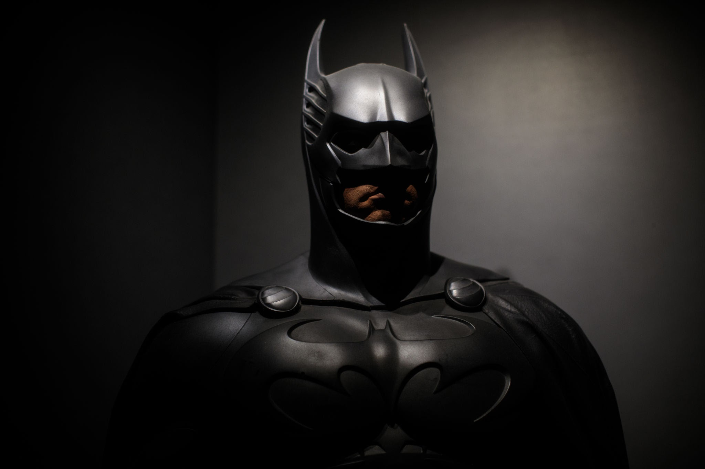

BATMAN
Primero tenemos que saber
¿Quien es Batman?
Una vez sabemos quien es batman lo siguiente que tenemos que conocer es
¿Donde aparece Batman?
Otras de las cosas fundamentales de Batman son
sus herramientas y traje.
Otra de las cosas mas importantes de este heroe es el lugar doinde se prepara para combatir el crimen,
la Batcave.
Por ultimo debemos hablar brevemente sobre
los enemigos de Batman.
